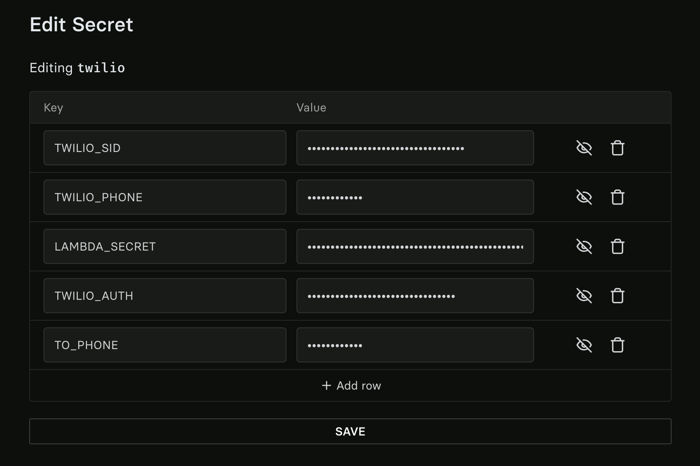
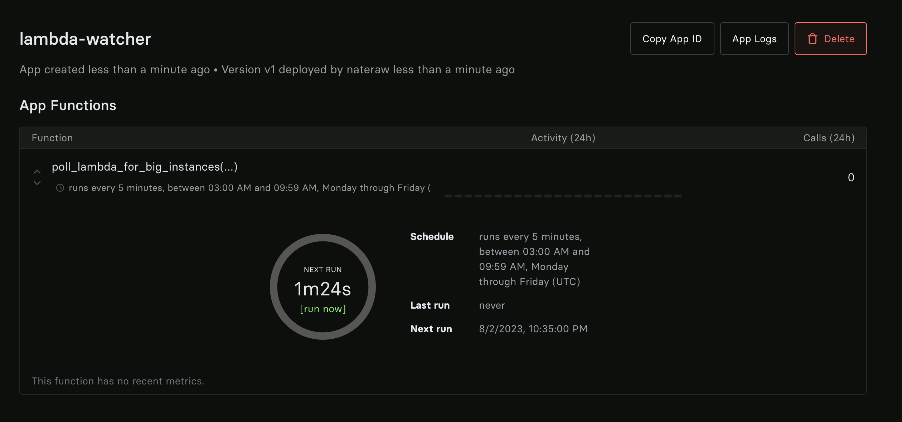

! pip install lambdacloud twilio modal-clientGPUs - so hot right now! It’s getting to the point where all available GPU instances are unavailable, which is a bummer if you’re trying to train a model.
As of writing this, Lambda Cloud is my favorite cloud GPU provider. They have great instances, an easy to use UI, and the best prices. The only downside is that they’re often sold out. So, let’s see what we can do about that.
The Plan
To make things easier, I put together a small Python library called lambdacloud that makes it easy to interface with the Lambda Cloud API. We’ll use this to check for available instances and spin them up.
We’ll also use Twilio to send text messages. You’ll need a Twilio account and a phone number that can send SMS messages.
To avoid having to run this script all the time from your local machine, we’ll use Modal to run the script on a schedule. Modal is a cloud orchestration platform that makes it easy to run code on cloud machines. Using it for this use case shouldn’t cost more than a few cents, but you can just follow along with the code and run it locally if you prefer.
You’ll need to authenticate with Modal if you haven’t already…
! modal token newTo authenticate with Lambda’s API, you’ll need an API key, which you can generate here when you’re logged in.
Additionally, you’ll need Twilio’s account identifier, auth token, and phone number, which you can find here. The phone number will be the one you’ll receive texts from, and it should be fairly easy to figure out how to set that up if you haven’t already.
Now that we have all our credentials, we’ll log into Modal and create a collection of secrets. See the docs on this feature here.
I’ve named my collection “twilio” and added the following environment variables: - TWILIO_SID: Twilio account identifier - TWILIO_AUTH: Your Twilio auth token - TWILIO_PHONE: Your Twilio phone number (Make sure to include the country code, e.g. +1 for US) - TO_PHONE: Your phone number you want to receive texts on (Make sure to include the country code, e.g. +1 for US) - LAMBDA_SECRET: Your Lambda Labs Cloud API Key

The Code
Everything’s ready, we just have to write a small script now 🚀. Here it is:
import os
import modal
stub = modal.Stub()
# Defines our environment, installs necessary packages
my_image = modal.Image.debian_slim().pip_install("lambdacloud", "twilio")
# Replace these with your own values
DESIRED_INSTANCE_TYPES = ["gpu_8x_a100_80gb_sxm4", "gpu_8x_a100", "gpu_8x_v100"]
@stub.function(image=my_image, schedule=modal.Cron("*/5 3-9 * * 1-5"), secret=modal.Secret.from_name("twilio"))
def poll_lambda_for_big_instances():
from lambdacloud import list_instance_types, login
from twilio.rest import Client
# Auth with lambda
login(token=os.environ["LAMBDA_SECRET"])
# Auth with twilio
account_sid = os.environ["TWILIO_SID"]
auth_token = os.environ["TWILIO_AUTH"]
client = Client(account_sid, auth_token)
from_phone = os.environ["TWILIO_PHONE"]
to_phone = os.environ["TO_PHONE"]
instances_available = [x.name for x in list_instance_types()]
nl = "\n"
print(f"Instances available:{nl}✅ - {f'{nl}✅ - '.join(instances_available)}")
desired_instances_available = []
for desired_instance in DESIRED_INSTANCE_TYPES:
if desired_instance in instances_available:
desired_instances_available.append(desired_instance)
if len(desired_instances_available):
body = f"The following instances are available on Lambda Cloud: {', '.join(desired_instances_available)}."
message = client.messages.create(from_=from_phone, to=to_phone, body=body)
print(f"Message sent - SID: {message.sid}")
if __name__ == "__main__":
modal.runner.deploy_stub(stub, name="lambda-watcher")If all went well, you should get a text message when an instance becomes available. You can also check the logs in Modal to see what’s going on. In the UI, you should see something like this for the deployment:

That’s it! Now you can text yourself when GPUs are available. It’s fairly easy to extend this script to spin up instances that are available, just use the lambdacloud.create_instance function. I’ll leave that to you as homework 😎.